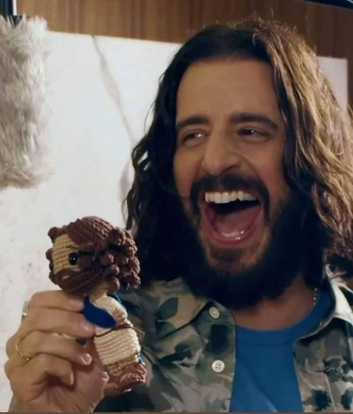
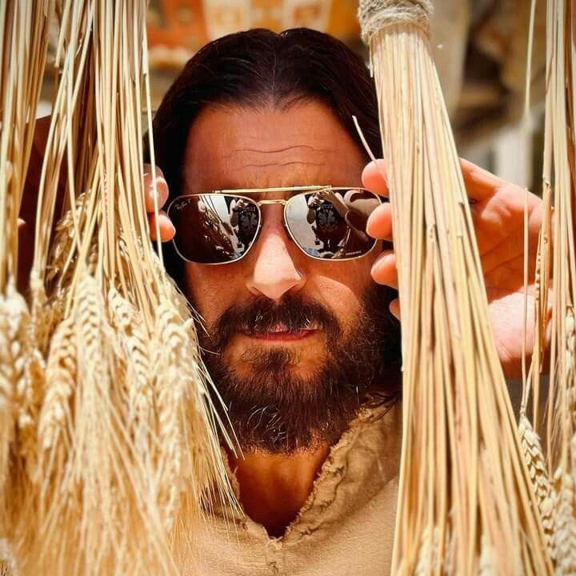
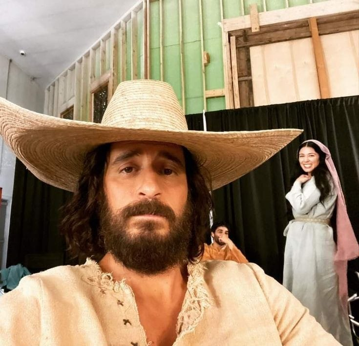
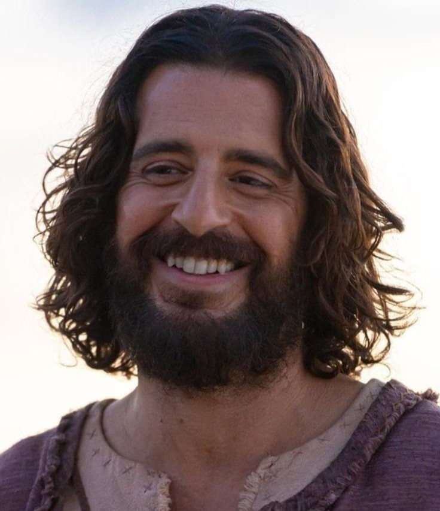
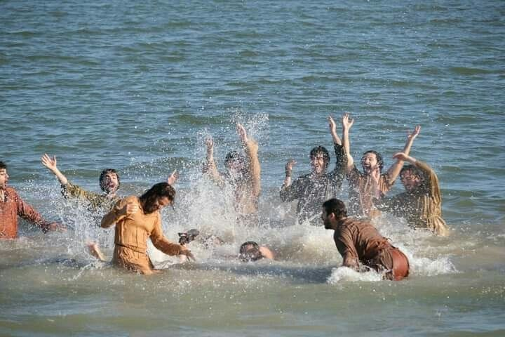
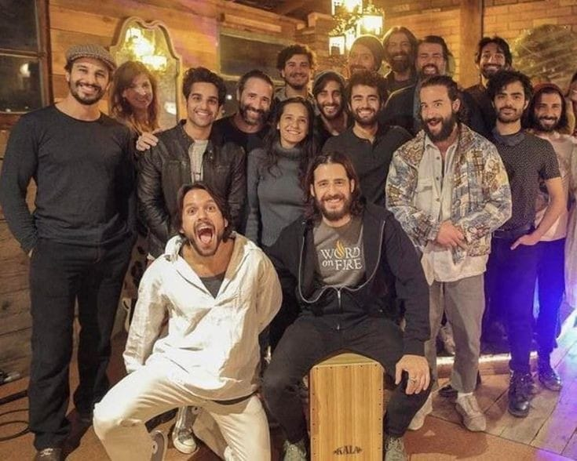
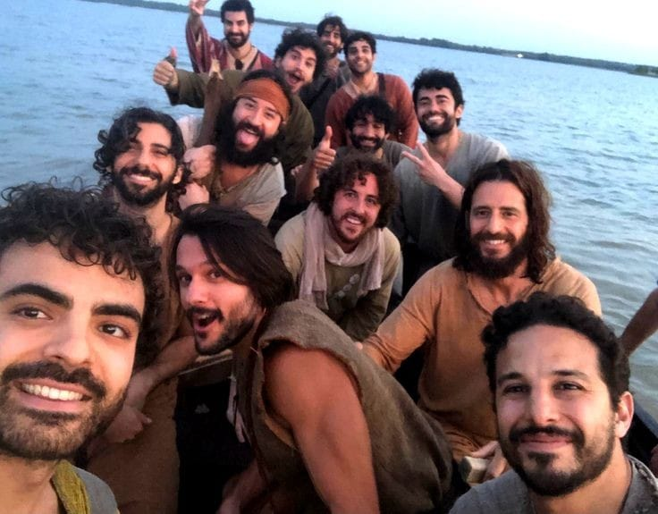
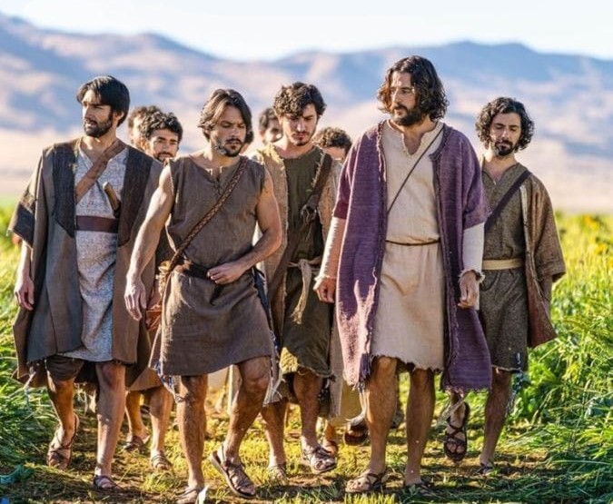

A série The Chosen – Os Escolhidos é uma ótima maneira de se conectar com a história e a tradição cristã ela retrata a trajetória de Jesus Cristo através do ponto de vista das pessoas que estiveram ao lado do Messias, se tornou um sucesso mundial, fascinando diferentes idades, a série proporciona um olhar íntimo a respeito da história de uma das figuras mais cultuadas do mundo. Resumindo ela conta a vida de Jesus Cristo e seus milagres sob a perspectiva daqueles que o conheceram e conviveram com Ele e a bíblia.
A série narra a vida de Cristo e suas interações com seus seguidores e com aqueles que encontra ao longo de seu ministério. A primeira temporada foca na escolha dos discípulos, incluindo Mateus, Pedro e Maria Madalena, e como suas vidas mudam ao serem chamados por Jesus. Uma das grandes diferenças de The Chosen é que ela se concentra no desenvolvimento de personagens, trazendo profundidade às suas lutas e histórias pessoais, o que torna as passagens bíblicas mais acessíveis e envolventes para o público moderno.
O elenco de the chosen é composto por diversas pessoas, sendo eles Jesus, seus discípulos, figurantes entre outros. Acompanhem logo abaixo
Jesus é o personagem principal da série, sendo ele o ator Jonathan Roumie, de 49 anos, que está vivendo o auge da fama ao interpretar Jesus na série "The Chosen", na série ele conta a história do messias cristão pelas histórias da Bíblia e o olhar de seus discípulos, seus milagres, entre outros acontecimentos, sua personalidade é descrita como humilde, descontraído e piadista, com tiradas de humor para quase todos os momentos com o objetivo de enriquecer a alma das pessoas que o rodeavam. Mas o ator, nascido em Nova Iorque, nos Estados Unidos, já vive o personagem há mais de 10 anos.
   Na série The Chosen, os discípulos de Jesus são apresentados com personalidades complexas e histórias de vida detalhadas, o que os torna mais humanos e acessíveis. Cada um é retratado com suas lutas e transformações, refletindo como o chamado de Jesus impacta suas vidas de maneiras profundas, os disipulos são: Simão, Pedro, André, Tiago filho de Zebedeu, João, Mateus, Filipe, Natanael, Tiago filho de Alfeu, Tadeu, Simão o Zelote e Tomé. Esses discípulos são mostrados como homens comuns, com medos, ambições e falhas, que lentamente são transformados pela convivência com Jesus e pelo entendimento de sua missão. A série foca em suas jornadas pessoais, destacando como Jesus molda cada um de acordo com suas características e desafios.
   Os Figurantes que eu digo são aqueles que participam da série, porém não têm uma participação tãopresente quanto os Discípulos e Jesus, porém são muito importantes no enredo e desenvolvimento da série.